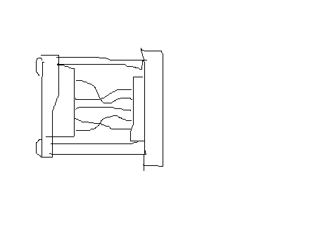

БДКГ-22/23. Прошивка
Если контроллер уже был прошит, подключиться к блоку для прошивки НЕ ПОЛУЧИТСЯ! Для того чтобы перепрошить блок:

- БДКГ-22 и 23 прошиваются специальным кабелем DB9⟶Fisher с двумя линиями A/B и разъемом питания для 12В (схемы кабеля)
- Подключается к компьютеру через адаптер USB-COMi-SI-M с нестандартными настройками: Есть три версии прошивки:
- bdkg22.hex — для БДКГ-22. Измерение в зивертах.
- bdkg23.hex — для БДКГ-23. Измерение в греях.
- bdkg23а.hex — для БДКГ-23/1 (изначально назывался БДКГ-23А). Измерение в зивертах.
- Шить через Flip:
- Выбрать тип контроллера — AT89C51ED2
- Подключение. Выбрать порт. Скорость — 115500
- Выбрать прошивку
- Нажать Run После окончания процесса прошивки:
- Снять BLJB
- Поставить Level 2
- Наклеить наклейку с версией прошивки

Суть метода заключается в разблокировке загрузчика через Terminal
- Подключиться через прошивочный кабель
- Подать питание на кабель
- Кабель к USB-COMi адаптеру подключить через переходник (схема) 
{kind=link}

БД разблокирован (пока подключено питание)